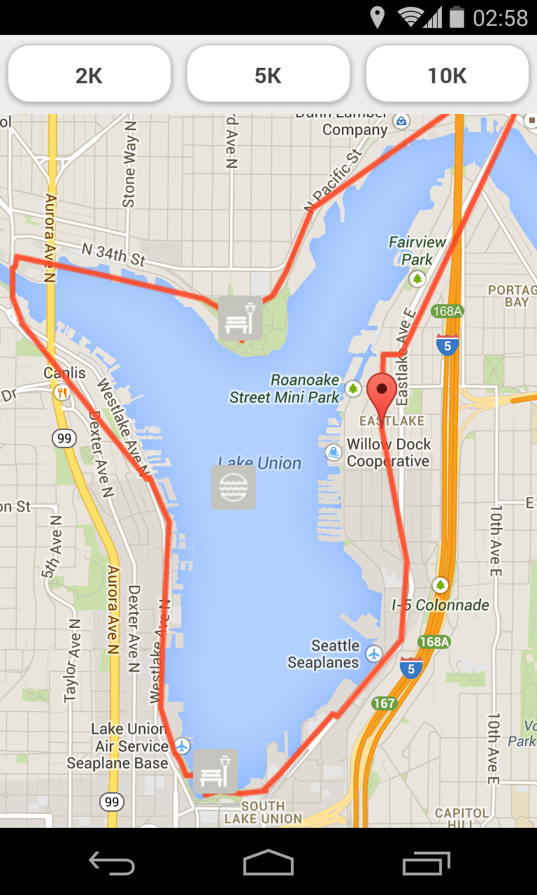

Last weekend I attended my first Startup Weekend. The event was very well organized; I had a great time and got to know a lot of good people.
Didn’t get enough votes for the idea I pitched (a dating site that matches people using data from services like Fitbit), so I ended up joining another team to build an app that generates running routes that pass near popular sights.

Our team consisted of 6 “non-technicals” and 3 developers (including myself). There was little friction, and I was impressed how well tasks like market research were performed. Somewhat less impressive was the amount of time spent discussing logos and background colors. Also, does the “Minimum Viable Product” really need a built-in music player? :-)
Despite Startup Weekend’s slogan (“No Talk, All Action”), there isn’t much incentive to put a lot of development effort into anything but building smoke and mirrors: Even though we had what appeared to be the only (somewhat) usable product, we didn’t even make it into the top 4…
Every Startup Weekend is probably unique, but it would be more worthwhile for developers if there was some technical mentorship, and judges also took execution into consideration, not just business plans.